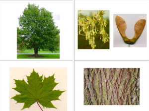
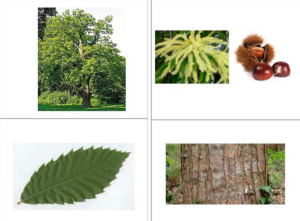
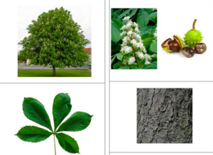
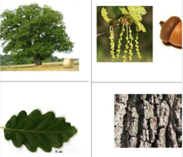
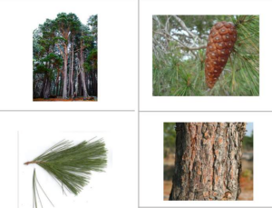
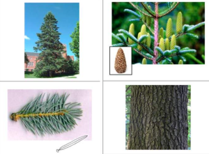

La forêt et son écosystème
contenu
menu
navigation
outils
Accueil
Module
Quelques arbres à connaitre
Regarde bien les feuilles, les fruits et le tronc de chaque arbre
L’érable

Le châtaignier

Le marronnier

Le chêne

Le pin

Le sapin

Précédent
Suivant
Objectifs
Introduction
Séance 1 : Découverte des arbres
Introduction
Exercice : Pour toi, la forêt c’est...
Exercice : Classe les images forêt / PAS forêt
Reconnais les 3 familles d’arbre de la forêt
Exercice : Teste tes connaissances ! Réponds aux questions suivantes pour voir ce que tu as retenu.
Quelques arbres à connaitre
Exercice
Exercice : Partage ton histoire
Conclusion
Séance 2 : Reconnaitre des arbres
Séance 3 : Les habitants de la forêt
Séance 4 : L’équilibre de l’écosystème forestier
Séance 5 : Protéger la forêt et sa biodiversité
Conclusion